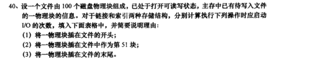
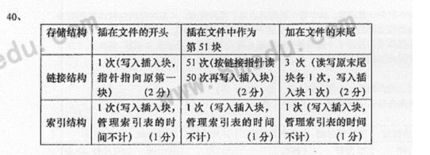

201710
用户文件共500个逻辑记录，每个逻辑记录的长度为320个字符，现拟将该文件以顺序结构存放到磁带上。磁带的记录密度为800字符／英寸，块与块之间的间隙为0.6英寸。试问：
(1)不采用记录成组操作时磁带空间的利用率是多少?
每个逻辑记录所占的磁带长度 320/800=0.4英寸(2)采用记录成组操作且块因子为8时，磁带空间的利用率是多少?
每组的逻辑记录有320*8=2560个(3)采用记录成组操作且块因子为8时，若把第9个逻辑记录读入到用户区的1500 单元开始的区域，请写出完成该要求的主要过程
201704
 2017年10月
设一个文件由100个记录组成，每个物理块存放1个记录，对于链接和索引两种存储结构，分别对文件执行下列操作，计算盅启动磁盘I／O的次数，请将下表绘制在答题卡上，将答案填入并简要说明理由：
| 存储结构 | 删除第1个记录 | 删除第51个记录 | 删除最后1个记录 |
|---|---|---|---|
| 链接结构 | 1次(头指针指向原来第二块) | 52次(拉链51次,再删除第51块) | 100次(拉链100次,将倒数第2块的指针改为空) |
| 索引结构 | 1次(从索引表中去掉登记项) | 1次(从索引表中去掉登记项) | 1次(从索引表中去掉登记项) |